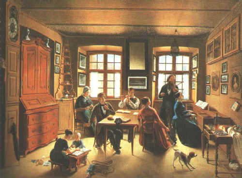

01 • MUNDO POST-NAPOLEÓNICO
01 • MUNDO POST-NAPOLEÓNICO
La Restauración y el Congreso de Viena
El intento de las potencias europeas por restaurar las monarquías absolutas tras Waterloo (1815) y frenar el liberalismo.
Explorar tema completo**Eje temático: Utopías sociales, Romanticismo y Nacionalismo (1815 – 1848).**
¿De qué manera la tensión entre el orden restaurador post-napoleónico y las transformaciones de la Revolución Industrial impulsó el surgimiento del Romanticismo, el Nacionalismo y las utopías sociales en el siglo XIX?

Cuando los ejércitos de Napoleón Bonaparte cayeron definitivamente en Waterloo en 1815, las monarquías europeas intentaron restaurar el Antiguo Régimen y frenar cualquier brote revolucionario. Sin embargo, al intentar construir un orden que ignoraba el legado de la Revolución Francesa y el avance imparable de la Revolución Industrial, se encontraron con una realidad avasalladora: el surgimiento de las utopías sociales, el sueño romántico de libertad y la fuerza del nacionalismo desembocarían en la Primavera de los Pueblos.
Analizaremos de manera conectada cómo Europa vivió una profunda recomposición tras la caída de Napoleón. Primero examinaremos el orden conservador del Congreso de Viena (1815) y el impacto social de la industrialización; luego exploraremos en nuestra red histórica cómo las utopías sociales, el Romanticismo y el Nacionalismo respondieron a estas tensiones hasta el estallido revolucionario de 1848.
Contexto histórico: Mundo Post-Napoleónico y Congreso de Viena (1815).

Revolución Industrial, cuestión social y Utopías Sociales.
Romanticismo, Nacionalismo y las oleadas revolucionarias (1820–1848).

Red de relaciones históricas, recurso interactivo y conclusiones.
Tras la caída de Napoleón en 1815, Europa vivió el choque entre el intento monárquico por restaurar el pasado y el avance irreversible de la industria y las nuevas ideas. Haz clic en cualquiera de los 4 cuadros para explorar su desarrollo completo.
Tras veinticinco años de guerras revolucionarias y expansión napoleónica que habían difundido las ideas de igualdad ante la ley y soberanía nacional, las potencias vencedoras (Austria, Rusia, Prusia y Gran Bretaña) se reunieron en el Congreso de Viena (1814-1815) para restaurar el Antiguo Régimen. Sin embargo, este orden conservador chocó frontalmente con la Revolución Industrial, detonando respuestas culturales, sociales y políticas que transformaron Europa.
01 • MUNDO POST-NAPOLEÓNICO
El intento de las potencias europeas por restaurar las monarquías absolutas tras Waterloo (1815) y frenar el liberalismo.
Explorar tema completo 02 • REVOLUCIÓN INDUSTRIAL
02 • REVOLUCIÓN INDUSTRIAL
La mecanización productiva, el nacimiento del proletariado urbano y las duras condiciones laborales del capitalismo fabril.
Explorar tema completo 03 • UTOPÍAS SOCIALES
03 • UTOPÍAS SOCIALES
Las propuestas comunitarias de Saint-Simon, Fourier y Owen para humanizar el trabajo y construir sociedades justas.
Explorar tema completo
04 • ROMANTICISMO Y NACIONALISMOLa exaltación de la libertad individual y el espíritu de los pueblos (Volksgeist) que impulsó las revoluciones de 1820 a 1848.
Explorar tema completoExplora cómo los procesos políticos y económicos del siglo XIX conectan causas, actores históricos, acontecimientos y consecuencias ideológicas. Haz clic en cada nodo para ver su análisis.
Recurso audiovisual original donde analizamos la evidencia histórica para responder a nuestra pregunta central.
Reemplaza este bloque con tu archivo video_equipo.mp4 o enlace de YouTube
Haz clic en cada bloque temático para consultar la tesis histórica desarrollada:
Filtra los acontecimientos clave entre 1815 y 1848 según su dimensión histórica o compara los postulados del Romanticismo, Nacionalismo y Utopías Sociales.
Selecciona una corriente para comparar qué criticaba, quiénes la impulsaron y cuál fue su legado histórico:
1. La doble revolución como motor del cambio: Como sostiene el historiador Eric Hobsbawm, el siglo XIX estuvo marcado por la interacción entre las consecuencias políticas de la era napoleónica y la transformación económica de la Revolución Industrial. El intento del Congreso de Viena (1815) por restaurar un orden absolutista resultó inviable frente a una sociedad que estaba cambiando material y culturalmente.
2. Respuestas ideológicas frente a la crisis: Las nuevas corrientes del periodo nacieron como respuestas directas a estas tensiones. Frente a la explotación fabril surgieron las utopías sociales buscando justicia comunitaria; frente al mecanicismo frío nació el Romanticismo reivindicando la subjetividad y las raíces culturales; y frente a las fronteras impuestas por los imperios emergió el Nacionalismo, convirtiendo la identidad cultural en un proyecto político de soberanía.
3. Legado hacia la modernidad: Aunque las revoluciones de 1848 fueron reprimidas en el corto plazo, consolidaron la agenda política del mundo contemporáneo: los derechos laborales, la participación ciudadana, el Estado-nación y la sensibilidad artística moderna.